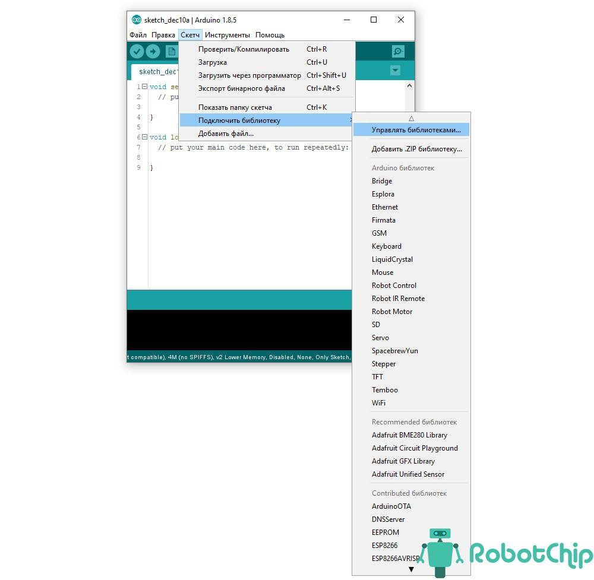

Скачать скетч
Скачать скетчhttps://robotchip.ru/obzor-modulya-rc522-rfid/
Не читает ключи от дома. Читает подорожник, пропуск на работу
Обзор модуля RC522 RFID
АВТОР: СЕРГЕЙ · 29.05.2020
В этой статье расскажу о технологии RFID и приведу пример подключения RFID-модуль RC522 к Arduino.
Технические параметры
►Основная микросхема микросхеме: RC522;
►Напряжение питания: 3,3 В;
►Потребляемый ток: 13 – 26 мA;
►Рабочая частота: 13,56 MГц;
►Поддерживаемые типы карт: Mifare1 s50, Mifare1 s70 , MIFARE Ultralight, Mifare Pro, MIFARE DESFire;
►Дальность считывания: 0 ~ 60 мм;
►Интерфейс: SPI, максимальная скорость передачи 10 МБит/с;
►Рабочая температура: от -20 до 80 °C;
►Размер модуля: 40 х 60 мм;
►Вес комплекта: 22 г.
Как работает RFID?
Полное название RFID (Radio Frequency IDentification) — радиочастотная идентификация, широко используемая во многих отраслях, для отслеживания персонала, контроля доступа, управления цепочками поставок, отслеживания библиотечных книг, системы начисления бонусов и других задач.
Система RFID состоит из двух основных компонентов: транспондера (метки) прикрепленного на объекте и устройства считывания карт (приемопередатчик).
Устройство считывания RFID-карт включает в себя радиочастотный модуль, блок управления и антенную катушку, которая генерирует высокочастотное электромагнитное поле. С другой стороны, метка обычно представляет собой пассивный элемент, состоящий только из антенны и микросхемы. Поэтому, когда метка (карта или брелок) находится близко к электромагнитному полю устройства считывания карт (приемопередатчик). В его антенне образуется индукционное напряжение, которое используется в качестве источника питания микросхемы.
Обзор модуля RC522, RFID
Модуль RFID RC522 основан на микросхеме MFRC522 от NXP. Поставляется с двумя метками, RFID-картой и брелком с объемом памяти 1 КБ.
Модуль RFID RC522 создает электромагнитное поля с частотой 13,56 МГц, которое используется для связи с RFID метками (стандартные метки ISO 14443A). Для взаимодействия с контроллерами, модуль использует 4-х контактный интерфейс SPI. Так же, модуль поддерживает протоколы связи I2C и UART.
Дополнительно, выведен контакт прерывания IRQ, которой позволяет опрашивать модуль только тога, когда приложили карту.
Назначение контактов:
► VCC — Вывод питание модуля, от 2,5 до 3,3 вольт.
► RST — Вывод сброса и отключения питания. При установки вывода в низкое состояние, модуль отключается.
► GND — Вывод заземления.
► IRQ — Вывод прерывания.
► MISO / SCL / Tx — Вывод интерфейс SPI, I2S и UART включен.
► MOSI (Master Out Slave In) — Вход SPI.
► SCK — Вывод тактовых импульсов.
► SDA / SS / Rx — Вывод интерфейс SPI, I2S и UART включен.
Напряжение питание модуля:
Рабочее напряжение модуля составляет от 2,5 до 3,3 В , но логические выводы могут работать от 5 В , поэтому мы можем напрямую подключать его к Arduino или любому 5 В логическому микроконтроллеру без использования какого-либо преобразователя логического уровня.
Подключение модуля RC522 RFID к Arduino UNO
Необходимые детали:
► Arduino UNO R3 x 1 шт.
► Считыватель RFID, RC522, 13.56MHz x 1 шт.
► Кабель USB 2.0 A-B x 1 шт.
► Провода DuPont M-F, 20 см x 1 шт.
Подключение:
В этом примере покажу как подключить модуль RC522 к Arduino UNO и считаем данные с карты и брелка.
Для начала подключим питание, вывод VCC на модуле RC522 к 3,3 В на Arduino UNO, а выводу GND — к земле. Вывод RST можно подключить к любому выводу Arduino, в примере используем вывод 5. Вывод IRQ не подключен, поскольку библиотека Arduino, которую мы собираемся использовать, не поддерживает его.
Теперь осталось подключить интерфейсный SPI. Для плат Arduino UNO и Nano, эти контакты являются цифровыми 13 (SCK), 12 (MISO), 11 (MOSI) и 10 (SS).
Таблица подключений
Установка библиотеки:
Для работы с RFID модулем RC522 нам понадобится библиотека MFRC522, которая упрощает чтение и запись в RFID матки. «Скетч» -> «Подключить библиотеку» и нажимает «Управлять библиотеками…»
Откроется новое окно «Менеджер библиотек», в окне поиска вводим «MFRC522» и устанавливаем библиотеку.
Программа:
Данный скетч просто считывает уникальный UID карты и отображает его в «Мониторинге порта«.
После успешной загрузки скетча откройте «Мониторинг порта» и приложите карту.
Как видите, отобразился идентификатор UID карты.
Модуль так же может записывать данные на карты RFID, как это делать опишу в следующих статьях.
�